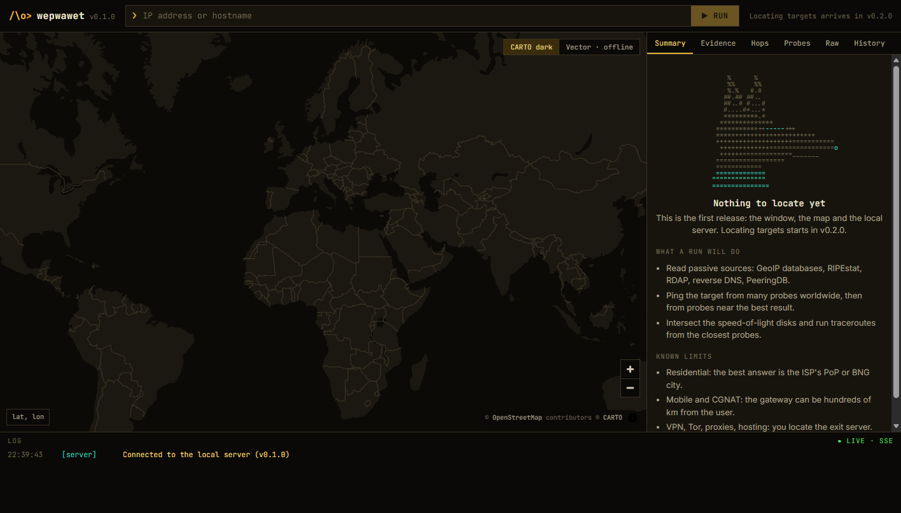

Usage
Open Wepwawet from the desktop menu, or type wepwawet in a terminal.
The window

- Top bar: the target (an IP address or a hostname) and the Run button. Locating targets arrives in v0.2.0.
- Map: drag to move, scroll or use + and − to zoom. The coordinates under the pointer are in the bottom-left corner.
- Side panel: Summary, Evidence, Hops, Probes, Raw and History tabs. In v0.1.0 only Summary has content.
- Log: live messages from the local server. "live · sse" means the window is connected.
Base maps
The buttons in the top-right corner of the map switch between:
- CARTO dark (default): street-level vector tiles from CARTO, built from OpenStreetMap data and recoloured to match the interface. Needs the network and follows CARTO's terms.
- Vector · offline: country outlines from Natural Earth, bundled with the application. No network request at all.
If CARTO cannot be reached, Wepwawet switches to the offline map and says so in the log.
When the window cannot open
Qt WebEngine needs a graphical session and a working OpenGL stack. If the window fails (for example over SSH or in some virtual machines):
wepwawet gui --browser # same interface, in the system browser
wepwawet serve # server only; open the printed address yourselfIf the map shows "The map cannot start", the display has no working WebGL: use --browser.
The jackal
The ASCII jackal shows what Wepwawet is doing: asleep when there is nothing to do, sniffing and looking around while it measures, with a crossed eye on errors, and pleased when it has an answer. With "reduce motion" enabled in your desktop settings it stays still.